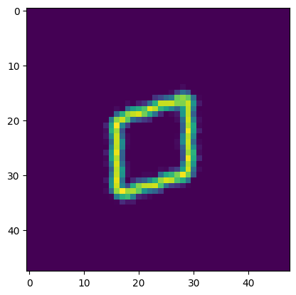
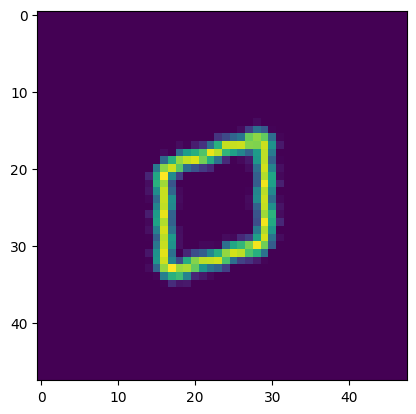

Tutorial: Cycle-Consistent Spatial Transforming Autoencoders#
By Shuyu Qin, Joshua C. Agar
Department of Mechanical Engineering and Mechanics Drexel University
!pip install m3_learning --no-deps
!pip install -r ../tutorial_requirements.txt
Show code cell output
Requirement already satisfied: m3_learning in /home/xinqiao/anaconda3/envs/m3_test/lib/python3.10/site-packages (0.0.22)
Requirement already satisfied: numpy in /home/xinqiao/anaconda3/envs/m3_test/lib/python3.10/site-packages (from -r ../tutorial_requirements.txt (line 1)) (1.26.1)
Requirement already satisfied: matplotlib in /home/xinqiao/anaconda3/envs/m3_test/lib/python3.10/site-packages (from -r ../tutorial_requirements.txt (line 3)) (3.8.1)
Requirement already satisfied: sklearn in /home/xinqiao/anaconda3/envs/m3_test/lib/python3.10/site-packages (from -r ../tutorial_requirements.txt (line 5)) (0.0.post11)
Requirement already satisfied: torch in /home/xinqiao/anaconda3/envs/m3_test/lib/python3.10/site-packages (from -r ../tutorial_requirements.txt (line 7)) (2.1.0)
Requirement already satisfied: Pillow in /home/xinqiao/anaconda3/envs/m3_test/lib/python3.10/site-packages (from -r ../tutorial_requirements.txt (line 8)) (10.1.0)
Requirement already satisfied: tifffile in /home/xinqiao/anaconda3/envs/m3_test/lib/python3.10/site-packages (from -r ../tutorial_requirements.txt (line 9)) (2023.9.26)
Requirement already satisfied: tqdm in /home/xinqiao/anaconda3/envs/m3_test/lib/python3.10/site-packages (from -r ../tutorial_requirements.txt (line 11)) (4.66.1)
Requirement already satisfied: py-cpuinfo in /home/xinqiao/anaconda3/envs/m3_test/lib/python3.10/site-packages (from -r ../tutorial_requirements.txt (line 13)) (9.0.0)
Requirement already satisfied: opencv-python in /home/xinqiao/anaconda3/envs/m3_test/lib/python3.10/site-packages (from -r ../tutorial_requirements.txt (line 15)) (4.8.1.78)
Requirement already satisfied: hyperspy in /home/xinqiao/anaconda3/envs/m3_test/lib/python3.10/site-packages (from -r ../tutorial_requirements.txt (line 17)) (1.7.5)
Requirement already satisfied: ipywidgets in /home/xinqiao/anaconda3/envs/m3_test/lib/python3.10/site-packages (from -r ../tutorial_requirements.txt (line 19)) (8.1.1)
Requirement already satisfied: msgpack in /home/xinqiao/anaconda3/envs/m3_test/lib/python3.10/site-packages (from -r ../tutorial_requirements.txt (line 21)) (1.0.7)
Requirement already satisfied: zict in /home/xinqiao/anaconda3/envs/m3_test/lib/python3.10/site-packages (from -r ../tutorial_requirements.txt (line 23)) (3.0.0)
Requirement already satisfied: sortedcontainers in /home/xinqiao/anaconda3/envs/m3_test/lib/python3.10/site-packages (from -r ../tutorial_requirements.txt (line 25)) (2.4.0)
Requirement already satisfied: pyNSID in /home/xinqiao/anaconda3/envs/m3_test/lib/python3.10/site-packages (from -r ../tutorial_requirements.txt (line 27)) (0.0.7.2)
Requirement already satisfied: pycroscopy in /home/xinqiao/anaconda3/envs/m3_test/lib/python3.10/site-packages (from -r ../tutorial_requirements.txt (line 29)) (0.63.0)
Collecting sidpy==0.11.1 (from -r ../tutorial_requirements.txt (line 31))
Using cached sidpy-0.11.1-py2.py3-none-any.whl (96 kB)
Requirement already satisfied: torchsummary in /home/xinqiao/.local/lib/python3.10/site-packages (from -r ../tutorial_requirements.txt (line 33)) (1.5.1)
Requirement already satisfied: wget in /home/xinqiao/anaconda3/envs/m3_test/lib/python3.10/site-packages (from -r ../tutorial_requirements.txt (line 35)) (3.2)
Requirement already satisfied: xlrd in /home/xinqiao/anaconda3/envs/m3_test/lib/python3.10/site-packages (from -r ../tutorial_requirements.txt (line 37)) (2.0.1)
Requirement already satisfied: toolz in /home/xinqiao/anaconda3/envs/m3_test/lib/python3.10/site-packages (from sidpy==0.11.1->-r ../tutorial_requirements.txt (line 31)) (0.12.0)
Requirement already satisfied: cytoolz in /home/xinqiao/anaconda3/envs/m3_test/lib/python3.10/site-packages (from sidpy==0.11.1->-r ../tutorial_requirements.txt (line 31)) (0.12.2)
Requirement already satisfied: dask>=0.10 in /home/xinqiao/anaconda3/envs/m3_test/lib/python3.10/site-packages (from sidpy==0.11.1->-r ../tutorial_requirements.txt (line 31)) (2023.10.1)
Requirement already satisfied: h5py>=2.6.0 in /home/xinqiao/anaconda3/envs/m3_test/lib/python3.10/site-packages (from sidpy==0.11.1->-r ../tutorial_requirements.txt (line 31)) (3.10.0)
Requirement already satisfied: distributed>=2.0.0 in /home/xinqiao/anaconda3/envs/m3_test/lib/python3.10/site-packages (from sidpy==0.11.1->-r ../tutorial_requirements.txt (line 31)) (2023.10.1)
Requirement already satisfied: psutil in /home/xinqiao/anaconda3/envs/m3_test/lib/python3.10/site-packages (from sidpy==0.11.1->-r ../tutorial_requirements.txt (line 31)) (5.9.6)
Requirement already satisfied: six in /home/xinqiao/anaconda3/envs/m3_test/lib/python3.10/site-packages (from sidpy==0.11.1->-r ../tutorial_requirements.txt (line 31)) (1.16.0)
Requirement already satisfied: joblib>=0.11.0 in /home/xinqiao/anaconda3/envs/m3_test/lib/python3.10/site-packages (from sidpy==0.11.1->-r ../tutorial_requirements.txt (line 31)) (1.3.2)
Requirement already satisfied: scikit-learn in /home/xinqiao/anaconda3/envs/m3_test/lib/python3.10/site-packages (from sidpy==0.11.1->-r ../tutorial_requirements.txt (line 31)) (1.3.2)
Requirement already satisfied: scipy in /home/xinqiao/anaconda3/envs/m3_test/lib/python3.10/site-packages (from sidpy==0.11.1->-r ../tutorial_requirements.txt (line 31)) (1.11.3)
Requirement already satisfied: ase in /home/xinqiao/anaconda3/envs/m3_test/lib/python3.10/site-packages (from sidpy==0.11.1->-r ../tutorial_requirements.txt (line 31)) (3.22.1)
Requirement already satisfied: ipython>=6.0 in /home/xinqiao/anaconda3/envs/m3_test/lib/python3.10/site-packages (from sidpy==0.11.1->-r ../tutorial_requirements.txt (line 31)) (8.17.2)
Requirement already satisfied: contourpy>=1.0.1 in /home/xinqiao/anaconda3/envs/m3_test/lib/python3.10/site-packages (from matplotlib->-r ../tutorial_requirements.txt (line 3)) (1.2.0)
Requirement already satisfied: cycler>=0.10 in /home/xinqiao/anaconda3/envs/m3_test/lib/python3.10/site-packages (from matplotlib->-r ../tutorial_requirements.txt (line 3)) (0.12.1)
Requirement already satisfied: fonttools>=4.22.0 in /home/xinqiao/anaconda3/envs/m3_test/lib/python3.10/site-packages (from matplotlib->-r ../tutorial_requirements.txt (line 3)) (4.44.0)
Requirement already satisfied: kiwisolver>=1.3.1 in /home/xinqiao/anaconda3/envs/m3_test/lib/python3.10/site-packages (from matplotlib->-r ../tutorial_requirements.txt (line 3)) (1.4.5)
Requirement already satisfied: packaging>=20.0 in /home/xinqiao/anaconda3/envs/m3_test/lib/python3.10/site-packages (from matplotlib->-r ../tutorial_requirements.txt (line 3)) (23.2)
Requirement already satisfied: pyparsing>=2.3.1 in /home/xinqiao/anaconda3/envs/m3_test/lib/python3.10/site-packages (from matplotlib->-r ../tutorial_requirements.txt (line 3)) (3.1.1)
Requirement already satisfied: python-dateutil>=2.7 in /home/xinqiao/anaconda3/envs/m3_test/lib/python3.10/site-packages (from matplotlib->-r ../tutorial_requirements.txt (line 3)) (2.8.2)
Requirement already satisfied: filelock in /home/xinqiao/anaconda3/envs/m3_test/lib/python3.10/site-packages (from torch->-r ../tutorial_requirements.txt (line 7)) (3.13.1)
Requirement already satisfied: typing-extensions in /home/xinqiao/anaconda3/envs/m3_test/lib/python3.10/site-packages (from torch->-r ../tutorial_requirements.txt (line 7)) (4.8.0)
Requirement already satisfied: sympy in /home/xinqiao/anaconda3/envs/m3_test/lib/python3.10/site-packages (from torch->-r ../tutorial_requirements.txt (line 7)) (1.12)
Requirement already satisfied: networkx in /home/xinqiao/anaconda3/envs/m3_test/lib/python3.10/site-packages (from torch->-r ../tutorial_requirements.txt (line 7)) (3.2.1)
Requirement already satisfied: jinja2 in /home/xinqiao/anaconda3/envs/m3_test/lib/python3.10/site-packages (from torch->-r ../tutorial_requirements.txt (line 7)) (3.1.2)
Requirement already satisfied: fsspec in /home/xinqiao/anaconda3/envs/m3_test/lib/python3.10/site-packages (from torch->-r ../tutorial_requirements.txt (line 7)) (2023.10.0)
Requirement already satisfied: nvidia-cuda-nvrtc-cu12==12.1.105 in /home/xinqiao/anaconda3/envs/m3_test/lib/python3.10/site-packages (from torch->-r ../tutorial_requirements.txt (line 7)) (12.1.105)
Requirement already satisfied: nvidia-cuda-runtime-cu12==12.1.105 in /home/xinqiao/anaconda3/envs/m3_test/lib/python3.10/site-packages (from torch->-r ../tutorial_requirements.txt (line 7)) (12.1.105)
Requirement already satisfied: nvidia-cuda-cupti-cu12==12.1.105 in /home/xinqiao/anaconda3/envs/m3_test/lib/python3.10/site-packages (from torch->-r ../tutorial_requirements.txt (line 7)) (12.1.105)
Requirement already satisfied: nvidia-cudnn-cu12==8.9.2.26 in /home/xinqiao/anaconda3/envs/m3_test/lib/python3.10/site-packages (from torch->-r ../tutorial_requirements.txt (line 7)) (8.9.2.26)
Requirement already satisfied: nvidia-cublas-cu12==12.1.3.1 in /home/xinqiao/anaconda3/envs/m3_test/lib/python3.10/site-packages (from torch->-r ../tutorial_requirements.txt (line 7)) (12.1.3.1)
Requirement already satisfied: nvidia-cufft-cu12==11.0.2.54 in /home/xinqiao/anaconda3/envs/m3_test/lib/python3.10/site-packages (from torch->-r ../tutorial_requirements.txt (line 7)) (11.0.2.54)
Requirement already satisfied: nvidia-curand-cu12==10.3.2.106 in /home/xinqiao/anaconda3/envs/m3_test/lib/python3.10/site-packages (from torch->-r ../tutorial_requirements.txt (line 7)) (10.3.2.106)
Requirement already satisfied: nvidia-cusolver-cu12==11.4.5.107 in /home/xinqiao/anaconda3/envs/m3_test/lib/python3.10/site-packages (from torch->-r ../tutorial_requirements.txt (line 7)) (11.4.5.107)
Requirement already satisfied: nvidia-cusparse-cu12==12.1.0.106 in /home/xinqiao/anaconda3/envs/m3_test/lib/python3.10/site-packages (from torch->-r ../tutorial_requirements.txt (line 7)) (12.1.0.106)
Requirement already satisfied: nvidia-nccl-cu12==2.18.1 in /home/xinqiao/anaconda3/envs/m3_test/lib/python3.10/site-packages (from torch->-r ../tutorial_requirements.txt (line 7)) (2.18.1)
Requirement already satisfied: nvidia-nvtx-cu12==12.1.105 in /home/xinqiao/anaconda3/envs/m3_test/lib/python3.10/site-packages (from torch->-r ../tutorial_requirements.txt (line 7)) (12.1.105)
Requirement already satisfied: triton==2.1.0 in /home/xinqiao/anaconda3/envs/m3_test/lib/python3.10/site-packages (from torch->-r ../tutorial_requirements.txt (line 7)) (2.1.0)
Requirement already satisfied: nvidia-nvjitlink-cu12 in /home/xinqiao/anaconda3/envs/m3_test/lib/python3.10/site-packages (from nvidia-cusolver-cu12==11.4.5.107->torch->-r ../tutorial_requirements.txt (line 7)) (12.3.52)
Requirement already satisfied: traits>=4.5.0 in /home/xinqiao/anaconda3/envs/m3_test/lib/python3.10/site-packages (from hyperspy->-r ../tutorial_requirements.txt (line 17)) (6.4.3)
Requirement already satisfied: natsort in /home/xinqiao/anaconda3/envs/m3_test/lib/python3.10/site-packages (from hyperspy->-r ../tutorial_requirements.txt (line 17)) (8.4.0)
Requirement already satisfied: requests in /home/xinqiao/anaconda3/envs/m3_test/lib/python3.10/site-packages (from hyperspy->-r ../tutorial_requirements.txt (line 17)) (2.31.0)
Requirement already satisfied: dill in /home/xinqiao/anaconda3/envs/m3_test/lib/python3.10/site-packages (from hyperspy->-r ../tutorial_requirements.txt (line 17)) (0.3.7)
Requirement already satisfied: ipyparallel in /home/xinqiao/anaconda3/envs/m3_test/lib/python3.10/site-packages (from hyperspy->-r ../tutorial_requirements.txt (line 17)) (8.6.1)
Requirement already satisfied: scikit-image>=0.15 in /home/xinqiao/anaconda3/envs/m3_test/lib/python3.10/site-packages (from hyperspy->-r ../tutorial_requirements.txt (line 17)) (0.20.0)
Requirement already satisfied: pint>=0.10 in /home/xinqiao/anaconda3/envs/m3_test/lib/python3.10/site-packages (from hyperspy->-r ../tutorial_requirements.txt (line 17)) (0.22)
Requirement already satisfied: numexpr in /home/xinqiao/anaconda3/envs/m3_test/lib/python3.10/site-packages (from hyperspy->-r ../tutorial_requirements.txt (line 17)) (2.8.7)
Requirement already satisfied: sparse in /home/xinqiao/anaconda3/envs/m3_test/lib/python3.10/site-packages (from hyperspy->-r ../tutorial_requirements.txt (line 17)) (0.14.0)
Requirement already satisfied: imageio<2.28 in /home/xinqiao/anaconda3/envs/m3_test/lib/python3.10/site-packages (from hyperspy->-r ../tutorial_requirements.txt (line 17)) (2.22.3)
Requirement already satisfied: pyyaml in /home/xinqiao/anaconda3/envs/m3_test/lib/python3.10/site-packages (from hyperspy->-r ../tutorial_requirements.txt (line 17)) (6.0.1)
Requirement already satisfied: prettytable in /home/xinqiao/anaconda3/envs/m3_test/lib/python3.10/site-packages (from hyperspy->-r ../tutorial_requirements.txt (line 17)) (3.9.0)
Requirement already satisfied: numba>=0.52 in /home/xinqiao/anaconda3/envs/m3_test/lib/python3.10/site-packages (from hyperspy->-r ../tutorial_requirements.txt (line 17)) (0.58.1)
Requirement already satisfied: importlib-metadata>=3.6 in /home/xinqiao/anaconda3/envs/m3_test/lib/python3.10/site-packages (from hyperspy->-r ../tutorial_requirements.txt (line 17)) (6.8.0)
Requirement already satisfied: zarr>=2.9.0 in /home/xinqiao/anaconda3/envs/m3_test/lib/python3.10/site-packages (from hyperspy->-r ../tutorial_requirements.txt (line 17)) (2.16.1)
Requirement already satisfied: comm>=0.1.3 in /home/xinqiao/anaconda3/envs/m3_test/lib/python3.10/site-packages (from ipywidgets->-r ../tutorial_requirements.txt (line 19)) (0.2.0)
Requirement already satisfied: traitlets>=4.3.1 in /home/xinqiao/anaconda3/envs/m3_test/lib/python3.10/site-packages (from ipywidgets->-r ../tutorial_requirements.txt (line 19)) (5.13.0)
Requirement already satisfied: widgetsnbextension~=4.0.9 in /home/xinqiao/anaconda3/envs/m3_test/lib/python3.10/site-packages (from ipywidgets->-r ../tutorial_requirements.txt (line 19)) (4.0.9)
Requirement already satisfied: jupyterlab-widgets~=3.0.9 in /home/xinqiao/anaconda3/envs/m3_test/lib/python3.10/site-packages (from ipywidgets->-r ../tutorial_requirements.txt (line 19)) (3.0.9)
Requirement already satisfied: tensorly>=0.6.0 in /home/xinqiao/anaconda3/envs/m3_test/lib/python3.10/site-packages (from pycroscopy->-r ../tutorial_requirements.txt (line 29)) (0.8.1)
Requirement already satisfied: simpleitk in /home/xinqiao/anaconda3/envs/m3_test/lib/python3.10/site-packages (from pycroscopy->-r ../tutorial_requirements.txt (line 29)) (2.3.1)
Requirement already satisfied: pysptools in /home/xinqiao/anaconda3/envs/m3_test/lib/python3.10/site-packages (from pycroscopy->-r ../tutorial_requirements.txt (line 29)) (0.15.0)
Requirement already satisfied: cvxopt>=1.2.7 in /home/xinqiao/anaconda3/envs/m3_test/lib/python3.10/site-packages (from pycroscopy->-r ../tutorial_requirements.txt (line 29)) (1.3.2)
Requirement already satisfied: click>=8.0 in /home/xinqiao/anaconda3/envs/m3_test/lib/python3.10/site-packages (from dask>=0.10->sidpy==0.11.1->-r ../tutorial_requirements.txt (line 31)) (8.1.7)
Requirement already satisfied: cloudpickle>=1.5.0 in /home/xinqiao/anaconda3/envs/m3_test/lib/python3.10/site-packages (from dask>=0.10->sidpy==0.11.1->-r ../tutorial_requirements.txt (line 31)) (3.0.0)
Requirement already satisfied: partd>=1.2.0 in /home/xinqiao/anaconda3/envs/m3_test/lib/python3.10/site-packages (from dask>=0.10->sidpy==0.11.1->-r ../tutorial_requirements.txt (line 31)) (1.4.1)
Requirement already satisfied: locket>=1.0.0 in /home/xinqiao/anaconda3/envs/m3_test/lib/python3.10/site-packages (from distributed>=2.0.0->sidpy==0.11.1->-r ../tutorial_requirements.txt (line 31)) (1.0.0)
Requirement already satisfied: tblib>=1.6.0 in /home/xinqiao/anaconda3/envs/m3_test/lib/python3.10/site-packages (from distributed>=2.0.0->sidpy==0.11.1->-r ../tutorial_requirements.txt (line 31)) (3.0.0)
Requirement already satisfied: tornado>=6.0.4 in /home/xinqiao/anaconda3/envs/m3_test/lib/python3.10/site-packages (from distributed>=2.0.0->sidpy==0.11.1->-r ../tutorial_requirements.txt (line 31)) (6.3.3)
Requirement already satisfied: urllib3>=1.24.3 in /home/xinqiao/anaconda3/envs/m3_test/lib/python3.10/site-packages (from distributed>=2.0.0->sidpy==0.11.1->-r ../tutorial_requirements.txt (line 31)) (2.0.7)
Requirement already satisfied: zipp>=0.5 in /home/xinqiao/anaconda3/envs/m3_test/lib/python3.10/site-packages (from importlib-metadata>=3.6->hyperspy->-r ../tutorial_requirements.txt (line 17)) (3.17.0)
Requirement already satisfied: decorator in /home/xinqiao/anaconda3/envs/m3_test/lib/python3.10/site-packages (from ipython>=6.0->sidpy==0.11.1->-r ../tutorial_requirements.txt (line 31)) (5.1.1)
Requirement already satisfied: jedi>=0.16 in /home/xinqiao/anaconda3/envs/m3_test/lib/python3.10/site-packages (from ipython>=6.0->sidpy==0.11.1->-r ../tutorial_requirements.txt (line 31)) (0.19.1)
Requirement already satisfied: matplotlib-inline in /home/xinqiao/anaconda3/envs/m3_test/lib/python3.10/site-packages (from ipython>=6.0->sidpy==0.11.1->-r ../tutorial_requirements.txt (line 31)) (0.1.6)
Requirement already satisfied: prompt-toolkit!=3.0.37,<3.1.0,>=3.0.30 in /home/xinqiao/anaconda3/envs/m3_test/lib/python3.10/site-packages (from ipython>=6.0->sidpy==0.11.1->-r ../tutorial_requirements.txt (line 31)) (3.0.40)
Requirement already satisfied: pygments>=2.4.0 in /home/xinqiao/anaconda3/envs/m3_test/lib/python3.10/site-packages (from ipython>=6.0->sidpy==0.11.1->-r ../tutorial_requirements.txt (line 31)) (2.16.1)
Requirement already satisfied: stack-data in /home/xinqiao/anaconda3/envs/m3_test/lib/python3.10/site-packages (from ipython>=6.0->sidpy==0.11.1->-r ../tutorial_requirements.txt (line 31)) (0.6.3)
Requirement already satisfied: exceptiongroup in /home/xinqiao/anaconda3/envs/m3_test/lib/python3.10/site-packages (from ipython>=6.0->sidpy==0.11.1->-r ../tutorial_requirements.txt (line 31)) (1.1.3)
Requirement already satisfied: pexpect>4.3 in /home/xinqiao/anaconda3/envs/m3_test/lib/python3.10/site-packages (from ipython>=6.0->sidpy==0.11.1->-r ../tutorial_requirements.txt (line 31)) (4.8.0)
Requirement already satisfied: MarkupSafe>=2.0 in /home/xinqiao/anaconda3/envs/m3_test/lib/python3.10/site-packages (from jinja2->torch->-r ../tutorial_requirements.txt (line 7)) (2.1.3)
Requirement already satisfied: llvmlite<0.42,>=0.41.0dev0 in /home/xinqiao/anaconda3/envs/m3_test/lib/python3.10/site-packages (from numba>=0.52->hyperspy->-r ../tutorial_requirements.txt (line 17)) (0.41.1)
Requirement already satisfied: PyWavelets>=1.1.1 in /home/xinqiao/anaconda3/envs/m3_test/lib/python3.10/site-packages (from scikit-image>=0.15->hyperspy->-r ../tutorial_requirements.txt (line 17)) (1.4.1)
Requirement already satisfied: lazy_loader>=0.1 in /home/xinqiao/anaconda3/envs/m3_test/lib/python3.10/site-packages (from scikit-image>=0.15->hyperspy->-r ../tutorial_requirements.txt (line 17)) (0.3)
Requirement already satisfied: threadpoolctl>=2.0.0 in /home/xinqiao/anaconda3/envs/m3_test/lib/python3.10/site-packages (from scikit-learn->sidpy==0.11.1->-r ../tutorial_requirements.txt (line 31)) (3.2.0)
Requirement already satisfied: asciitree in /home/xinqiao/anaconda3/envs/m3_test/lib/python3.10/site-packages (from zarr>=2.9.0->hyperspy->-r ../tutorial_requirements.txt (line 17)) (0.3.3)
Requirement already satisfied: fasteners in /home/xinqiao/anaconda3/envs/m3_test/lib/python3.10/site-packages (from zarr>=2.9.0->hyperspy->-r ../tutorial_requirements.txt (line 17)) (0.19)
Requirement already satisfied: numcodecs>=0.10.0 in /home/xinqiao/anaconda3/envs/m3_test/lib/python3.10/site-packages (from zarr>=2.9.0->hyperspy->-r ../tutorial_requirements.txt (line 17)) (0.12.1)
Requirement already satisfied: entrypoints in /home/xinqiao/anaconda3/envs/m3_test/lib/python3.10/site-packages (from ipyparallel->hyperspy->-r ../tutorial_requirements.txt (line 17)) (0.4)
Requirement already satisfied: ipykernel>=4.4 in /home/xinqiao/anaconda3/envs/m3_test/lib/python3.10/site-packages (from ipyparallel->hyperspy->-r ../tutorial_requirements.txt (line 17)) (6.26.0)
Requirement already satisfied: jupyter-client in /home/xinqiao/anaconda3/envs/m3_test/lib/python3.10/site-packages (from ipyparallel->hyperspy->-r ../tutorial_requirements.txt (line 17)) (8.6.0)
Requirement already satisfied: pyzmq>=18 in /home/xinqiao/anaconda3/envs/m3_test/lib/python3.10/site-packages (from ipyparallel->hyperspy->-r ../tutorial_requirements.txt (line 17)) (25.1.1)
Requirement already satisfied: wcwidth in /home/xinqiao/anaconda3/envs/m3_test/lib/python3.10/site-packages (from prettytable->hyperspy->-r ../tutorial_requirements.txt (line 17)) (0.2.9)
Requirement already satisfied: charset-normalizer<4,>=2 in /home/xinqiao/anaconda3/envs/m3_test/lib/python3.10/site-packages (from requests->hyperspy->-r ../tutorial_requirements.txt (line 17)) (3.3.2)
Requirement already satisfied: idna<4,>=2.5 in /home/xinqiao/anaconda3/envs/m3_test/lib/python3.10/site-packages (from requests->hyperspy->-r ../tutorial_requirements.txt (line 17)) (3.4)
Requirement already satisfied: certifi>=2017.4.17 in /home/xinqiao/anaconda3/envs/m3_test/lib/python3.10/site-packages (from requests->hyperspy->-r ../tutorial_requirements.txt (line 17)) (2023.7.22)
Requirement already satisfied: mpmath>=0.19 in /home/xinqiao/anaconda3/envs/m3_test/lib/python3.10/site-packages (from sympy->torch->-r ../tutorial_requirements.txt (line 7)) (1.3.0)
Requirement already satisfied: debugpy>=1.6.5 in /home/xinqiao/anaconda3/envs/m3_test/lib/python3.10/site-packages (from ipykernel>=4.4->ipyparallel->hyperspy->-r ../tutorial_requirements.txt (line 17)) (1.8.0)
Requirement already satisfied: jupyter-core!=5.0.*,>=4.12 in /home/xinqiao/anaconda3/envs/m3_test/lib/python3.10/site-packages (from ipykernel>=4.4->ipyparallel->hyperspy->-r ../tutorial_requirements.txt (line 17)) (5.5.0)
Requirement already satisfied: nest-asyncio in /home/xinqiao/anaconda3/envs/m3_test/lib/python3.10/site-packages (from ipykernel>=4.4->ipyparallel->hyperspy->-r ../tutorial_requirements.txt (line 17)) (1.5.8)
Requirement already satisfied: parso<0.9.0,>=0.8.3 in /home/xinqiao/anaconda3/envs/m3_test/lib/python3.10/site-packages (from jedi>=0.16->ipython>=6.0->sidpy==0.11.1->-r ../tutorial_requirements.txt (line 31)) (0.8.3)
Requirement already satisfied: ptyprocess>=0.5 in /home/xinqiao/anaconda3/envs/m3_test/lib/python3.10/site-packages (from pexpect>4.3->ipython>=6.0->sidpy==0.11.1->-r ../tutorial_requirements.txt (line 31)) (0.7.0)
Requirement already satisfied: executing>=1.2.0 in /home/xinqiao/anaconda3/envs/m3_test/lib/python3.10/site-packages (from stack-data->ipython>=6.0->sidpy==0.11.1->-r ../tutorial_requirements.txt (line 31)) (2.0.1)
Requirement already satisfied: asttokens>=2.1.0 in /home/xinqiao/anaconda3/envs/m3_test/lib/python3.10/site-packages (from stack-data->ipython>=6.0->sidpy==0.11.1->-r ../tutorial_requirements.txt (line 31)) (2.4.1)
Requirement already satisfied: pure-eval in /home/xinqiao/anaconda3/envs/m3_test/lib/python3.10/site-packages (from stack-data->ipython>=6.0->sidpy==0.11.1->-r ../tutorial_requirements.txt (line 31)) (0.2.2)
Requirement already satisfied: platformdirs>=2.5 in /home/xinqiao/anaconda3/envs/m3_test/lib/python3.10/site-packages (from jupyter-core!=5.0.*,>=4.12->ipykernel>=4.4->ipyparallel->hyperspy->-r ../tutorial_requirements.txt (line 17)) (4.0.0)
Installing collected packages: sidpy
Attempting uninstall: sidpy
Found existing installation: sidpy 0.12.1
Uninstalling sidpy-0.12.1:
Successfully uninstalled sidpy-0.12.1
ERROR: pip's dependency resolver does not currently take into account all the packages that are installed. This behaviour is the source of the following dependency conflicts.
bglib 0.0.4 requires sidpy>=0.12.1, but you have sidpy 0.11.1 which is incompatible.
Successfully installed sidpy-0.11.1
Configuration#
Imports packages#
import matplotlib.pyplot as plt
import numpy as np
import torch
import torch.nn.functional as F
import torch.optim as optim
import torch.nn as nn
from tqdm import tqdm
import cv2
from skimage.filters import sobel
import tarfile
from m3_learning.util.download import download
2023-11-10 16:30:53.727381: I tensorflow/tsl/cuda/cudart_stub.cc:28] Could not find cuda drivers on your machine, GPU will not be used.
2023-11-10 16:30:53.761329: E tensorflow/compiler/xla/stream_executor/cuda/cuda_dnn.cc:9342] Unable to register cuDNN factory: Attempting to register factory for plugin cuDNN when one has already been registered
2023-11-10 16:30:53.761358: E tensorflow/compiler/xla/stream_executor/cuda/cuda_fft.cc:609] Unable to register cuFFT factory: Attempting to register factory for plugin cuFFT when one has already been registered
2023-11-10 16:30:53.761420: E tensorflow/compiler/xla/stream_executor/cuda/cuda_blas.cc:1518] Unable to register cuBLAS factory: Attempting to register factory for plugin cuBLAS when one has already been registered
2023-11-10 16:30:53.769114: I tensorflow/core/platform/cpu_feature_guard.cc:182] This TensorFlow binary is optimized to use available CPU instructions in performance-critical operations.
To enable the following instructions: AVX2 AVX512F FMA, in other operations, rebuild TensorFlow with the appropriate compiler flags.
2023-11-10 16:30:54.464832: W tensorflow/compiler/tf2tensorrt/utils/py_utils.cc:38] TF-TRT Warning: Could not find TensorRT
Downloads Files#
# downloads the dataset
download('https://github.com/m3-learning/m3_learning/blob/main/m3_learning/Tutorials/Cycle_Consistent_Spatial_Transformer_Autoencoder/data/cards.tar.xz?raw=true', 'cards.tar.xz')
# downloads a pretrained model
download("https://github.com/m3-learning/Unsupervised-rotation-detection-and-label-learning/blob/main/11.12_unsupervised_learn_label_epoch_17957_coef_0_trainloss_0.0008.pkl?raw=true",
'11.12_unsupervised_learn_label_epoch_17957_coef_0_trainloss_0.0008.pkl')
The file cards.tar.xz already exists. Skipping download.
The file 11.12_unsupervised_learn_label_epoch_17957_coef_0_trainloss_0.0008.pkl already exists. Skipping download.
Extracts Files#
file = tarfile.open('./cards.tar.xz')
file.extractall('./')
file.close()
Data Preprocessing#
Conversion#
# Converts images to grayscale
card1 = cv2.imread("cards/card1.JPG", cv2.IMREAD_GRAYSCALE)
card2 = cv2.imread("cards/card2.JPG", cv2.IMREAD_GRAYSCALE)
card3 = cv2.imread("cards/card3.JPG", cv2.IMREAD_GRAYSCALE)
card4 = cv2.imread("cards/card4.JPG", cv2.IMREAD_GRAYSCALE)
# Normalizes the image based on the max value
card1 = torch.tensor(1 - card1 / card1.max())
card2 = torch.tensor(1 - card2 / card2.max())
card3 = torch.tensor(1 - card3 / card3.max())
card4 = torch.tensor(1 - card4 / card4.max())
# Resizes the image
card_small_1 = F.interpolate(card1.unsqueeze(0).unsqueeze(
1), size=(48, 48)).clone().type(torch.float).cpu().numpy()
card_small_2 = F.interpolate(card2.unsqueeze(0).unsqueeze(
1), size=(48, 48)).clone().type(torch.float).cpu().numpy()
card_small_3 = F.interpolate(card3.unsqueeze(0).unsqueeze(
1), size=(48, 48)).clone().type(torch.float).cpu().numpy()
card_small_4 = F.interpolate(card4.unsqueeze(0).unsqueeze(
1), size=(48, 48)).clone().type(torch.float).cpu().numpy()
Raw Data Visulalization#
plt.imshow(card_small_1.squeeze())
<matplotlib.image.AxesImage at 0x7f0f10519db0>
Edge detection#
# Sobel edge detection
card_edge_1 = sobel(card_small_1.squeeze())
card_edge_2 = sobel(card_small_2.squeeze())
card_edge_3 = sobel(card_small_3.squeeze())
card_edge_4 = sobel(card_small_4.squeeze())
# Convert to a tensor
card_edge_1 = torch.tensor(
card_edge_1, dtype=torch.float).unsqueeze(0).unsqueeze(1)
card_edge_2 = torch.tensor(
card_edge_2, dtype=torch.float).unsqueeze(0).unsqueeze(1)
card_edge_3 = torch.tensor(
card_edge_3, dtype=torch.float).unsqueeze(0).unsqueeze(1)
card_edge_4 = torch.tensor(
card_edge_4, dtype=torch.float).unsqueeze(0).unsqueeze(1)
Data Generation#
This will generate a bunch of images that are rotated from the initial position
# sets the range and the number of steps to generate images
angle = torch.linspace(0, 2*np.pi, 2000)
# predefines a list
input_data_set_1 = []
input_data_set_2 = []
input_data_set_3 = []
input_data_set_4 = []
for q in angle:
# defines the theta matrix for an affine transformation
theta = torch.tensor([
[torch.cos(q), torch.sin(q), 0],
[-torch.sin(q), torch.cos(q), 0]
], dtype=torch.float)
# calculates the grid for the affine transformation
grid = F.affine_grid(theta.unsqueeze(0), card_edge_1.size())
# applies the affine transformation to the image
output = F.grid_sample(card_edge_1, grid)
# adds the image to the dataset
input_data_set_1.append(output)
output = F.grid_sample(card_edge_2, grid)
input_data_set_2.append(output)
output = F.grid_sample(card_edge_3, grid)
input_data_set_3.append(output)
output = F.grid_sample(card_edge_4, grid)
input_data_set_4.append(output)
# combines all the data together
input_set_1 = torch.stack(input_data_set_1).squeeze(1)
input_set_2 = torch.stack(input_data_set_2).squeeze(1)
input_set_3 = torch.stack(input_data_set_3).squeeze(1)
input_set_4 = torch.stack(input_data_set_4).squeeze(1)
Visualize example rotated images#
plt.imshow(card_edge_1.squeeze())
<matplotlib.image.AxesImage at 0x7f0f093a0eb0>
Formulate a single dataset#
input_set = torch.cat(
(input_set_1, input_set_2, input_set_3, input_set_4), axis=0)
Visualize example images in training data#
for i in range(2000):
if i % 200 == 0:
plt.figure()
plt.imshow(input_set_4[i].squeeze())
 

Builds the Neural Network#
Convolutional Block#
This is a standard convolutional block with ReLu. Each block has 4 layers. There is a layer normalization, and ResNet-like message passing.
class conv_block(nn.Module):
def __init__(self, t_size, n_step):
super(conv_block, self).__init__()
self.cov1d_1 = nn.Conv2d(
t_size, t_size, 3, stride=1, padding=1, padding_mode='zeros')
self.cov1d_2 = nn.Conv2d(
t_size, t_size, 3, stride=1, padding=1, padding_mode='zeros')
self.cov1d_3 = nn.Conv2d(
t_size, t_size, 3, stride=1, padding=1, padding_mode='zeros')
self.norm_3 = nn.LayerNorm(n_step)
self.relu_1 = nn.ReLU()
self.relu_2 = nn.ReLU()
self.relu_3 = nn.ReLU()
def forward(self, x):
x_input = x
out = self.cov1d_1(x)
out = self.relu_1(out)
out = self.cov1d_2(out)
out = self.relu_2(out)
out = self.cov1d_3(out)
out = self.norm_3(out)
out = self.relu_3(out)
out = out.add(x_input)
return out
Idenity Block#
This is a single convolutional layer with a layer norm and ReLu activation function
class identity_block(nn.Module):
def __init__(self, t_size, n_step):
super(identity_block, self).__init__()
self.cov1d_1 = nn.Conv2d(
t_size, t_size, 3, stride=1, padding=1, padding_mode='zeros')
self.norm_1 = nn.LayerNorm(n_step)
self.relu = nn.ReLU()
def forward(self, x):
x_input = x
out = self.cov1d_1(x)
out = self.norm_1(out)
out = self.relu(out)
return out
Encoder construction#
This constructs the encoder using the convolutional and identity blocks.
class Encoder(nn.Module):
def __init__(self, original_step_size, pool_list, embedding_size, conv_size):
super(Encoder, self).__init__()
# list of blocks
blocks = []
# defines the orignal step size
self.input_size_0 = original_step_size[0]
self.input_size_1 = original_step_size[1]
# a list that has the number of pooling layers
number_of_blocks = len(pool_list)
# Adds an initial Conv_block, identity block and max pool
blocks.append(conv_block(t_size=conv_size, n_step=original_step_size))
blocks.append(identity_block(
t_size=conv_size, n_step=original_step_size))
blocks.append(nn.MaxPool2d(pool_list[0], stride=pool_list[0]))
# adds additional layers based on the number of blocks
for i in range(1, number_of_blocks):
original_step_size = [
original_step_size[0]//pool_list[i-1], original_step_size[1]//pool_list[i-1]]
blocks.append(conv_block(t_size=conv_size,
n_step=original_step_size))
blocks.append(identity_block(
t_size=conv_size, n_step=original_step_size))
blocks.append(nn.MaxPool2d(pool_list[i], stride=pool_list[i]))
# defines the convolutional embedding blocks
self.block_layer = nn.ModuleList(blocks)
self.layers = len(blocks)
original_step_size = [original_step_size[0] //
pool_list[-1], original_step_size[1]//pool_list[-1]]
input_size = original_step_size[0]*original_step_size[1]
# defines the initial layer
self.cov2d = nn.Conv2d(1, conv_size, 3, stride=1,
padding=1, padding_mode='zeros')
# defines the conv layer at the end of the conv block
self.cov2d_1 = nn.Conv2d(
conv_size, 1, 3, stride=1, padding=1, padding_mode='zeros')
self.relu_1 = nn.ReLU()
self.tanh = nn.Tanh()
# Layer that takes the ouput of the conv block and reduces its dimensionsl to 20
self.before = nn.Linear(input_size, 20)
# layer that takes the 20 parameter latent space and learns the embedding of the affine transformation
self.dense = nn.Linear(20, embedding_size)
def forward(self, x):
out = x.view(-1, 1, self.input_size_0, self.input_size_1)
out = self.cov2d(out)
for i in range(self.layers):
out = self.block_layer[i](out)
out = self.cov2d_1(out)
# flattens the conv layers so it is 1D
out = torch.flatten(out, start_dim=1)
# Embedding that goes to the classification layer
kout = self.before(out)
# Fully connected layer that helps learn the affine transformation
out = self.dense(kout)
out = self.tanh(out)
theta = out.view(-1, 2, 3)
# learns the grid of the affine tranformation
grid = F.affine_grid(theta.to(device), x.size()).to(device)
# applies the affine transformation to the image
output = F.grid_sample(x, grid)
return output, kout, theta
Decoder#
class Decoder(nn.Module):
def __init__(self, original_step_size, up_list, embedding_size, conv_size):
super(Decoder, self).__init__()
# Defines the size of the input
self.input_size_0 = original_step_size[0]
self.input_size_1 = original_step_size[1]
# dense layer used for the probability of beloning to each class
self.dense = nn.Linear(4, original_step_size[0]*original_step_size[1])
self.cov2d = nn.Conv2d(1, conv_size, 3, stride=1,
padding=1, padding_mode='zeros')
self.cov2d_1 = nn.Conv2d(
conv_size, 1, 3, stride=1, padding=1, padding_mode='zeros')
# list where the blocks are saved
blocks = []
# number of blocks in the model
number_of_blocks = len(up_list)
# adds the blocks to the model
blocks.append(conv_block(t_size=conv_size, n_step=original_step_size))
blocks.append(identity_block(
t_size=conv_size, n_step=original_step_size))
for i in range(number_of_blocks):
# adds an upsampling layer to compensate for pooling
blocks.append(nn.Upsample(
scale_factor=up_list[i], mode='bilinear', align_corners=True))
original_step_size = [original_step_size[0] *
up_list[i], original_step_size[1]*up_list[i]]
blocks.append(conv_block(t_size=conv_size,
n_step=original_step_size))
blocks.append(identity_block(
t_size=conv_size, n_step=original_step_size))
self.block_layer = nn.ModuleList(blocks)
self.layers = len(blocks)
self.output_size_0 = original_step_size[0]
self.output_size_1 = original_step_size[1]
self.relu_1 = nn.ReLU()
self.norm = nn.LayerNorm(4)
# used to convert probability into classification
self.softmax = nn.Softmax()
# prediction layer for classification
self.for_k = nn.Linear(20, 4)
# number of outputs for the classification layer
self.num_k_sparse = 1
def ktop(self, x):
# This conduct the classification based on the encoded value
kout = self.for_k(x)
kout = self.norm(kout)
kout = self.softmax(kout)
k_no = kout.clone()
k = self.num_k_sparse
with torch.no_grad():
if k < kout.shape[1]:
for raw in k_no:
# computes the k-top layer
indices = torch.topk(raw, k)[1].to(device)
# creates a one-hot encoded vector
mask = torch.ones(raw.shape, dtype=bool).to(device)
mask[indices] = False
raw[mask] = 0
raw[~mask] = 1
return k_no
def forward(self, x):
# Does the classification
k_out = self.ktop(x)
# uses the classification to the decoder
out = self.dense(k_out)
# reshapes the tensor to be an image of the size of the original image
out = out.view(-1, 1, self.input_size_0, self.input_size_1)
# computes the decoder
out = self.cov2d(out)
for i in range(self.layers):
out = self.block_layer[i](out)
out = self.cov2d_1(out)
out = self.relu_1(out)
return out, k_out
Builds the autoencoder#
class Joint(nn.Module):
# Module that combines the encoder and the decoder
def __init__(self, encoder, decoder):
super(Joint, self).__init__()
# encoder and decoder
self.encoder = encoder
self.decoder = decoder
def forward(self, x):
# gets the result from the encoder
predicted, kout, theta = self.encoder(x)
# Builds the theta matrix
# We use an identity to ensure there is no translation
identity = torch.tensor([0, 0, 1], dtype=torch.float).reshape(
1, 1, 3).repeat(x.shape[0], 1, 1).to(device)
new_theta = torch.cat((theta, identity), axis=1).to(device)
# Computes the inverse of the affine transoformation
inver_theta = torch.linalg.inv(new_theta)[:, 0:2].to(device)
# Calculates the grid for inverse affine
grid = F.affine_grid(inver_theta.to(device), x.size()).to(device)
# Computes the decoder
predicted_base, k_out = self.decoder(kout)
# applies the inverse affine transformation to the decoded base
predicted_input = F.grid_sample(predicted_base, grid)
return predicted, predicted_base, predicted_input, k_out, theta
Sets optional parameters for autoencoder#
# Size of the original image
en_original_step_size = [48, 48]
# Defines the pooling layer
pool_list = [2, 2, 2]
# defines the size of the tensor
de_original_step_size = [4, 4]
# Defines how the upsampling should be conducted
up_list = [2, 2, 3]
# Sets the size of the embedding, this is the number of parameters in the affine
embedding_size = 6
# Sets the number of neurons in each layer
conv_size = 128
Checks operations#
# checks if cuda is available
print(torch.cuda.is_available())
if torch.cuda.is_available():
# Assigns device to cuda
device = torch.device('cuda')
else:
device = torch.device('cpu')
True
Instantiates the model#
# instantiates the encoder
encoder = Encoder(original_step_size=en_original_step_size,
pool_list=pool_list,
embedding_size=embedding_size,
conv_size=conv_size).to(device)
# instantiates the decoder
decoder = Decoder(original_step_size=de_original_step_size,
up_list=up_list,
embedding_size=embedding_size,
conv_size=conv_size).to(device)
# combines the two models
join = Joint(encoder, decoder).to(device)
Instantiate the optimizer#
optimizer = optim.Adam(join.parameters(), lr=3e-5)
Loads pretrained weights#
# if you would like to train this model from scratch set equal to false.
# Note this model takes many hours to train
pretrained = True
if pretrained:
# load the trained weights
path_checkpoint = "./11.12_unsupervised_learn_label_epoch_17957_coef_0_trainloss_0.0008.pkl"
checkpoint = torch.load(path_checkpoint, map_location=torch.device('cpu'))
join.load_state_dict(checkpoint['net'])
encoder.load_state_dict(checkpoint['encoder'])
decoder.load_state_dict(checkpoint['decoder'])
optimizer.load_state_dict(checkpoint['optimizer'])
start_epoch = checkpoint['epoch']
Loss Function#
def loss_function(join,
train_iterator,
optimizer,
ln_parm=1,
beta=None):
# weight_decay = coef
# weight_decay_1 = coef1
# set the train mode
join.train()
# loss of the epoch
train_loss = 0
# loop for calculating loss
for x in tqdm(train_iterator, leave=True, total=len(train_iterator)):
x = x.to(device, dtype=torch.float)
# update the gradients to zero
optimizer.zero_grad()
# computes the forward pass of the model
predicted_x, predicted_base, predicted_input, kout, theta = join(x)
# combines the loss from the affine and inverse affine transform
loss = F.mse_loss(predicted_base.squeeze(), predicted_x.squeeze(), reduction='mean')\
+ F.mse_loss(predicted_input.squeeze(),
x.squeeze(), reduction='mean')
# backward pass
train_loss += loss.item()
# computes the gradients
loss.backward()
# update the weights
optimizer.step()
return train_loss
Model Training#
def Train(join, encoder, decoder, train_iterator, optimizer,
epochs, coef=0, coef_1=0, ln_parm=1, beta=None, epoch_=None):
# sets the number of epochs to train
N_EPOCHS = epochs
best_train_loss = float('inf')
if epoch_ == None:
start_epoch = 0
else:
start_epoch = epoch_+1
# loops around the data set for each epoch
for epoch in range(start_epoch, N_EPOCHS):
# computes the loss
train = loss_function(join, train_iterator,
optimizer, ln_parm, beta)
# updates and prints the loss
train_loss = train
train_loss /= len(train_iterator)
print(f'Epoch {epoch}, Train Loss: {train_loss:.4f}')
print('.............................')
# If the model shows improvement after 50 epochs will save
if best_train_loss > train_loss:
best_train_loss = train_loss
patience_counter = 1
checkpoint = {
"net": join.state_dict(),
"encoder": encoder.state_dict(),
"decoder": decoder.state_dict(),
'optimizer': optimizer.state_dict(),
"epoch": epoch,
}
if epoch >= 50:
torch.save(
checkpoint, f'/content/drive/MyDrive/cycle_AE_model/11.12_unsupervised_learn_label_epoch:{epoch}_coef:{coef}_trainloss:{train_loss:.4f}.pkl')
Data loader#
Defines an iterator that serves as the data loader
train_iterator = torch.utils.data.DataLoader(
input_set, batch_size=300, shuffle=True)
Trains the model#
if not pretrained:
# unsupervised learn label
Train(join, encoder, decoder, train_iterator, optimizer, 50000, epoch_=0)
Validation#
Generates a small dataset for#
# generate the test data set for validation
angle = torch.linspace(0, 7*np.pi, 25)
input_data_set_1 = []
input_data_set_2 = []
input_data_set_3 = []
input_data_set_4 = []
for q in angle:
theta = torch.tensor([
[torch.cos(q), torch.sin(q), 0],
[-torch.sin(q), torch.cos(q), 0]
], dtype=torch.float)
grid = F.affine_grid(theta.unsqueeze(0), card_edge_1.size())
output = F.grid_sample(card_edge_1, grid)
input_data_set_1.append(output)
output = F.grid_sample(card_edge_2, grid)
input_data_set_2.append(output)
output = F.grid_sample(card_edge_3, grid)
input_data_set_3.append(output)
output = F.grid_sample(card_edge_4, grid)
input_data_set_4.append(output)
input_set_1 = torch.stack(input_data_set_1).squeeze(1)
input_set_2 = torch.stack(input_data_set_2).squeeze(1)
input_set_3 = torch.stack(input_data_set_3).squeeze(1)
input_set_4 = torch.stack(input_data_set_4).squeeze(1)
input_set_small = torch.cat(
(input_set_1, input_set_2, input_set_3, input_set_4), axis=0)
Builds a validation iterator#
train_iterator = torch.utils.data.DataLoader(
input_set_small, batch_size=100, shuffle=False)
Random sample visualization#
sample = next(iter(train_iterator))
Evaluation#
out, base, inp, kout, theta = join(sample.to(device, dtype=torch.float))
/home/xinqiao/anaconda3/envs/m3_test/lib/python3.10/site-packages/torch/nn/modules/module.py:1518: UserWarning: Implicit dimension choice for softmax has been deprecated. Change the call to include dim=X as an argument.
return self._call_impl(*args, **kwargs)
Visualize the results#
label_ = [card_edge_1, card_edge_2, card_edge_3, card_edge_4]
# Visualize the result
fig, ax = plt.subplots(6, 4, figsize=(20, 30))
for i in range(6):
j = np.random.randint(0, 100)
ax[i][0].title.set_text('input image')
ax[i][1].title.set_text('affine transform')
ax[i][2].title.set_text('generated basis')
ax[i][3].title.set_text(
f'Rotation {np.degrees(np.arccos(theta[j][0,0].detach().cpu()))}')
ax[i][0].imshow(sample[j].squeeze())
ax[i][1].imshow(out[j].squeeze().detach().cpu())
ax[i][2].imshow(base[j].squeeze().detach().cpu())
ax[i][3].imshow(inp[j].squeeze().detach().cpu())
# ax[3].imshow((label_[num].squeeze()-out[i].squeeze().detach().cpu())**2)
print(kout[j])
tensor([1., 0., 0., 0.], device='cuda:0', grad_fn=<SelectBackward0>)
tensor([1., 0., 0., 0.], device='cuda:0', grad_fn=<SelectBackward0>)
tensor([1., 0., 0., 0.], device='cuda:0', grad_fn=<SelectBackward0>)
tensor([1., 0., 0., 0.], device='cuda:0', grad_fn=<SelectBackward0>)
tensor([0., 0., 1., 0.], device='cuda:0', grad_fn=<SelectBackward0>)
tensor([0., 0., 1., 0.], device='cuda:0', grad_fn=<SelectBackward0>)